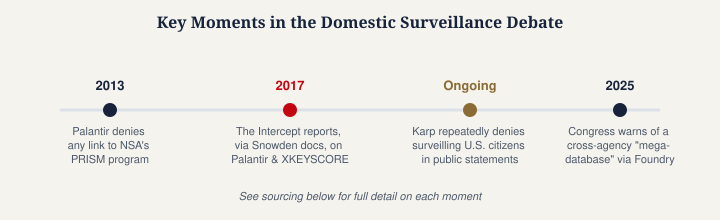

Does Palantir Spy on Americans?
Not affiliated with Palantir Technologies Inc. This is the most directly contested question on our site — Palantir's own public statements and investigative reporting disagree on specific, checkable facts, not just interpretation. We've attributed every claim to its source rather than resolving the dispute ourselves.
Palantir's CEO, Alex Karp, has stated publicly and repeatedly that the company does not surveil U.S. citizens. Investigative reporting — most notably from The Intercept, drawing on documents provided by NSA whistleblower Edward Snowden — has reported that Palantir's software was used to help build and expand an NSA program that collected communications data involving Americans. These are not simply two interpretations of the same facts; they are, in part, direct factual disagreements. Here's what's documented on each side.

What Palantir and its CEO have said
Speaking on the All-In podcast, Karp argued that Palantir's technology is poorly suited to civil-liberties abuses, and said this is part of why the NSA and FBI have never bought Palantir's product. Pressed directly on whether Palantir has surveilled Americans, Karp responded: "No, we are not surveilling… U.S. citizens." In a formal blog response to a separate article, Palantir went further, stating that it has never held a direct NSA contract and therefore played no role in building the NSA's XKEYSCORE intelligence-analysis tool. The company also described a different, unrelated software connector as playing only a limited role in lawful data access for partner agencies, and denied that it enabled broad spying on the American public.
Separately, in 2013, following the first wave of Snowden-related revelations, Palantir denied any connection to PRISM, the NSA program — pointing out that Palantir has an unrelated product, also called "Prism," used for financial data analysis by banks and hedge funds, not related to the government program of the same name.
What investigative reporting has found
The Intercept's 2017 reporting, based on documents provided by Edward Snowden, described Palantir as having helped the NSA expand a data-collection effort tied to XKEYSCORE — the same specific tool Palantir's 2025 blog post states it played no role in building. The Intercept's 2025 follow-up piece argues that Karp's denial of spying on Americans specifically would be nearly impossible for the company to establish with certainty, because NSA surveillance tools like XKEYSCORE are understood to sweep up American communications incidentally even when not directly targeting U.S. citizens — for example, if an American emails a foreign target who is under surveillance.
This is the crux of the disagreement: Palantir's denials are specifically about deliberately targeting or "spying on" Americans; The Intercept's reporting is about whether Palantir's software contributed to systems that incidentally collect American communications as a byproduct of foreign-intelligence collection — a distinction that matters legally and technically, but that can look, to an outside reader, like a flat contradiction if the distinction isn't made explicit.
The separate, more recent "mega-database" controversy

A different and more recent controversy concerns domestic data — not foreign-intelligence collection. In 2025, reporting (including from The New York Times) described the Trump administration directing federal agencies to share data using Palantir's Foundry platform, installed at agencies including the IRS and Social Security Administration. Ten U.S. senators and representatives, led by Sen. Ron Wyden and Rep. Alexandria Ocasio-Cortez, wrote to Karp warning that the effort could violate federal laws restricting how Americans' private information may be accessed and shared, including the Privacy Act and tax-privacy statutes. Palantir responded with a lengthy blog post; as with the IRS-specific contract detailed on our separate IRS page, the company has emphasized that it does not itself control the underlying government data.
Reporting from the Business & Human Rights Resource Centre also noted that a group of 13 former Palantir employees signed a letter urging the company to stop this work, quoting one former engineer who drew a distinction between the technology itself and how the current administration intends to use it — suggesting the concern was less about Palantir's tools than about the government's stated goals for them.
What's clearly opinion, not fact, in this debate
Some of the most widely shared commentary on this topic — pieces describing Palantir's platforms as an "all-seeing eye" or comparing the company's ambitions to authoritarian control — are explicitly opinion journalism or advocacy writing, not investigative reporting establishing new facts. We've drawn a clear line above between reported facts (sourced to named documents, named officials, or on-record company statements) and opinion framing, and would encourage reading the opinion pieces as arguments, not as independently verified claims.
Have thoughts on this page? Join the discussion below, or start a new one in People's Reflections.